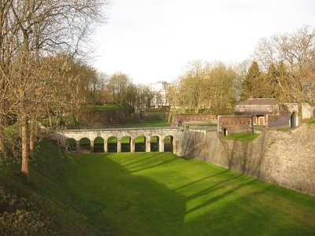
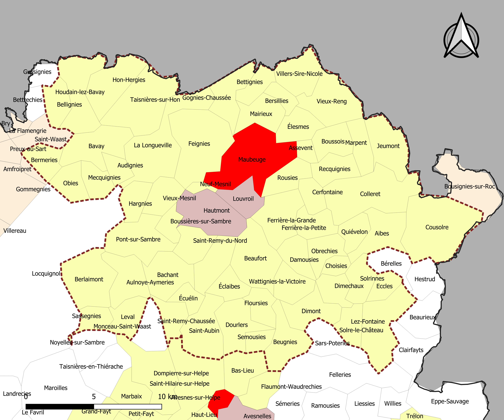

Organisations Locales :
- Avesnoise Promocil -
Site Web : Accueil - SAI
- Activité : Location de logements
- Missions : s'articulent autour de l'habitat social, de l'accompagnement des habitants et de l'aménagement du territoire dans les Hauts-de-France
- Impact sur la vie locale
- Accès au logement social : Avesnoise Promocil permet à des habitants de Maubeuge et des alentours de disposer de logements à loyers adaptés.
- Amélioration du cadre de vie : l’entreprise réalise des travaux de rénovation et d’entretien des logements et des quartiers.
- Cohésion sociale : elle accompagne les locataires et participe à des actions favorisant le lien social dans les quartiers.
- Impact sur le territoire
- Soutien à l’économie locale : ses projets de construction et de rénovation font travailler des entreprises et artisans du secteur.
- Renouvellement urbain : elle contribue à la transformation et à la modernisation de certains quartiers de Maubeuge.
- Attractivité du territoire : son offre de logements participe au maintien et à l’accueil des habitants dans l’Avesnois.
- Association Girafes et Colibris -
Lien Facebook : Girafes & Colibris | Facebook
- Activité : Organisation d'événements, de ciné-discussions et de débats (comme des projections autour de l'écologie et des initiatives citoyennes).
- Missions : promouvoir, transmettre et partager les connaissances, les pratiques et les expériences permettant de développer le respect du vivant et de son environnement
- Impact sur le territoire :
Sensibilisation écologique : L'association participe à l'animation du cadre de vie en diffusant des savoirs pratiques sur la biodiversité, le respect du vivant et l'éco-citoyenneté.
Ancrage dans la transition locale : En s'inscrivant dans le paysage associatif de l'Avesnois et du bassin de la Sambre, elle renforce le réseau des acteurs qui œuvrent pour un territoire plus résilient et durable. - Impact sur la vie locale :
Entraide et solidarité : À travers son volet "groupement d'entraide", elle crée des espaces d'échanges solidaires et de soutien mutuel entre les habitants.
Partage d'expériences : L'association mise sur la transmission horizontale de compétences (ateliers, rencontres, chantiers participatifs). Cela permet de valoriser les savoir-faire des habitants et de rompre l'isolement.
Culture de la coopération : En associant la symbolique de l'entraide, elle favorise un climat de dialogue bienveillant et d'intelligence collective au cœur des quartiers et communes environnantes
Démarche
Brainstorming initial
Objectifs et public cible
Créer un mini-site présentant la ville de Maubeuge (tourisme, événements, vie locale et formation) à destination d'un public large : habitants, visiteurs potentiels, futurs étudiants de l'IUT.
Idées de contenu retenues
- Une vidéo de présentation avec des images de Maubeuge
- Mise en avant des événements locaux (kermesse, fête des Géants)
- Présentation des lieux touristiques de la ville
- Une page dédiée à l'IUT
- Mise en avant d'une association et d'une entreprise locales
- Logo / blason de la ville présent sur les pages
Idées de structure et de design
- Charte graphique reprenant les couleurs de la ville de Maubeuge
- Logo/blason intégré à l'en-tête
- Recherche d'inspirations de design avant de commencer
Choix techniques
Hésitation entre un CMS (WordPress, pour la facilité) et du HTML/CSS pur (pour plus de personnalisation et de contrôle). Choix final : HTML/CSS, afin de répondre à la contrainte du TP et de garder une entière liberté sur le design.
Liste hiérarchisée des tâches
| # | Étape | Responsable | État |
|---|---|---|---|
| 1 | Brainstorming collectif (idées, structure, design, public cible) | Toute l'équipe | Terminé |
| 2 | Répartition des tâches entre les membres | Toute l'équipe | Terminé |
| 3 | Mise en place du squelette du site (structure HTML/CSS, menu responsive) | Gaël | Terminé |
| 4 | Réalisation de l'onglet 4 (contenu suivant un modèle imposé) | Gaël | Terminé |
| 5 | Collecte des informations pour l'onglet 1 | Melvyn | Terminé |
| 6 | Réalisation de l'onglet 1 à partir des infos reçues | Gaël | Terminé |
| 7 | Brainstorming détaillé pour le contenu du site (thème Maubeuge) | Grégoire | Terminé |
| 8 | Rédaction de l'onglet 2 - Démarche | Gaël + Grégoire | Terminé |
| 9 | Réalisation de l'onglet 3 | Melvyn | Terminé |
| 10 | Intégration des images, tableau et vidéo sur les pages de contenu | Gaël | Terminé |
| 13 | Validation W3C du HTML et du CSS | Toute l'équipe | Terminé |
Une entreprise et une association engagées pour l'environnement
Dans le cadre de ce site, nous avons choisi de mettre en avant deux acteurs locaux engagés pour l'environnement à Maubeuge : l'entreprise Avesnoise Promocil et l'association Girafes et Colibris.
| Avesnoise Promocil | Association Girafes et Colibris | |
|---|---|---|
| Objectif environnemental | Développer des systèmes de construction et de réhabilitation durables et écoresponsables. | Favoriser la transmission et le partage des connaissances, des pratiques et des expériences permettant de développer le respect du vivant et de son environnement. |
| Actions environnementales | Réhabilitation thermique des logements, construction durable, démarche de décarbonation. | Rassemblement pour encourager la réduction de l'impact environnemental de chacun, discussions autour de films sur l'environnement. |
| Public concerné | Locataires, habitants et collectivités locales. | Les citoyens de la ville et les personnes engagées dans l'association. |
| Impact recherché | Réduire les consommations d'énergie, améliorer le confort thermique et contribuer à la transition écologique. | Sensibilisation et partage de connaissances sur l'environnement et le respect du vivant, pour préserver les écosystèmes et éveiller la conscience écologique. |
| Indicateurs d'efficacité | Nombre de logements réhabilités, investissements dans la réhabilitation, logements raccordés au réseau de chaleur (500 annoncés à Maubeuge). | Pas de source prouvant l'efficacité des actions entreprises par l'association. |
| Résultats disponibles | 35 M€ investis en 2023 en construction et réhabilitation ; projet de raccordement de 500 logements au réseau de chaleur urbain. | Pas de source prouvant les résultats des différentes actions entreprises par l'association. |
Sources
- Avesnoise Promocil : groupe-sai.fr et pour l'impact recherché, voir le post LinkedIn
- Association Girafes et Colibris : assoce.fr, publication Facebook, événement Facebook
Charte numérique — Association Giraffes et Colibris
Dans le cadre de ses actions, l'association Giraffes et Colibris s'engage à promouvoir un usage responsable, sécurisé et respectueux des outils informatiques et numériques par l'ensemble de ses membres et bénévoles.
Utilisation responsable : chaque membre s'engage à utiliser le matériel informatique de l'association de manière raisonnée, sécurisée et éthique, dans le respect des autres utilisateurs.
Partage des fichiers : les documents de l'association (comptes-rendus, supports de communication, données des projets) sont stockés sur les espaces partagés définis, avec une organisation claire et des accès adaptés aux rôles de chacun.
Droit d'auteur et sources : toute réutilisation de contenus externes (photos, textes, illustrations) doit être citée et respecter les droits de propriété intellectuelle, notamment pour les supports de communication et le site internet.
Outils collaboratifs : les échanges entre membres et bénévoles s'appuient sur des outils validés par l'association (Drive, messagerie, CMS du site), à l'exclusion de solutions non sécurisées.
Protection des données personnelles : les données des adhérents, donateurs et bénévoles sont traitées conformément au RGPD, avec un accès limité aux personnes habilitées.
Bonnes pratiques écoresponsables : limitation du poids des fichiers échangés, suppression des données obsolètes, hébergement raisonné et sobriété numérique, en cohérence avec les valeurs environnementales portées par l'association.
Cette charte représente un engagement collectif des membres de Giraffes et Colibris dans une démarche numérique responsable, en accord avec l'esprit et les valeurs de l'association.
Charte numérique — Avesnoise Promocil
Dans le cadre de son activité, Avesnoise Promocil s'engage à promouvoir un usage responsable, sécurisé et respectueux des outils informatiques et numériques au sein de l'entreprise.
Utilisation responsable : chaque collaborateur s'engage à utiliser le matériel informatique de manière raisonnée, sécurisée et éthique, sans usage abusif à des fins personnelles.
Partage des fichiers : les documents de l'entreprise sont stockés sur les espaces partagés définis, avec une organisation claire (dossiers nommés, accès restreints selon les besoins).
Droit d'auteur et sources : toute réutilisation de contenus externes (textes, images, données) doit être citée et respecter les droits de propriété intellectuelle.
Outils collaboratifs : les échanges et le travail en équipe s'appuient sur des outils validés par l'entreprise (Drive, messagerie interne, CMS), à l'exclusion de solutions non sécurisées.
Protection des données personnelles : les données des clients et collaborateurs sont traitées conformément au RGPD, avec un accès limité aux personnes habilitées.
Bonnes pratiques écoresponsables : limitation du poids des fichiers échangés, suppression des données obsolètes, choix d'un hébergement sobre en énergie.
Cette charte engage l'ensemble des collaborateurs d'Avesnoise Promocil dans une démarche numérique responsable, sécurisée et durable.
Maubeuge, une ville au nord de la France
Présentation générale
Maubeuge est une ville du nord de la France, située près de la frontière belge. Elle compte environ 29 000 habitants et est traversée par le canal de la Sambre.
Histoire
Le nom de Maubeuge vient du latin Malbodium, signifiant « mauvais endroit » ou « mauvaise habitation ». La ville s'est développée autour d'un monastère double fondé au VIIe siècle par sainte Aldegonde.
Elle a d'abord fait partie du comté médiéval du Hainaut, puis des Pays-Bas espagnols, avant d'être cédée à la France par la paix de Nimègue en 1678. Sous Louis XIV, Maubeuge devient une forteresse stratégique intégrée au système défensif en « pré carré » de Vauban. La ville conserve aujourd'hui des fortifications datant du XVIIe siècle.

Un monument commémore également la bataille de Wattignies (1793), qui s'est déroulée à proximité de la ville.
Géographie
Maubeuge se situe dans le nord de la France, à proximité immédiate de la frontière belge, et est traversée par le canal de la Sambre.

Économie
L'économie locale est historiquement marquée par la sidérurgie et les industries métallurgiques. La ville possède également un IUT, contribuant à la formation et à la vie étudiante du territoire.
Événements et traditions
- Le cortège Jean Mabuse
- Les Géants de Maubeuge
- La kermesse de Maubeuge
Ville fortifiée au riche patrimoine, Maubeuge perpétue ces traditions populaires qui rythment la vie locale tout au long de l'année.
Anecdote : Maubeuge a inspiré en 1961 la chanson « Un clair de lune à Maubeuge », écrite par Pierre Perrin et rendue célèbre par Bourvil (elle fut aussi interprétée par Annie Cordy). Le titre a connu un tel succès qu'il est entré dans le répertoire populaire français, aux côtés d'autres classiques comme « Le Petit Vin Blanc », et a même inspiré en 1962 un film du même nom, réalisé par Jean Chérasse avec Claude Brasseur (et une apparition non créditée de Louis de Funès). Plus récemment, en 2016, Johnny Hallyday a repris quelques notes du refrain sur les réseaux sociaux, prouvant que la chanson reste encore aujourd'hui associée à la ville.
Quelques lieux de Maubeuge

Porte de Mons
Vestige des fortifications construites par Vauban au XVIIe siècle, c'est l'un des symboles les plus connus de la ville.

Citadelle de Maubeuge
Construite par Vauban au XVIIe siècle, elle est aujourd'hui classée monument historique.